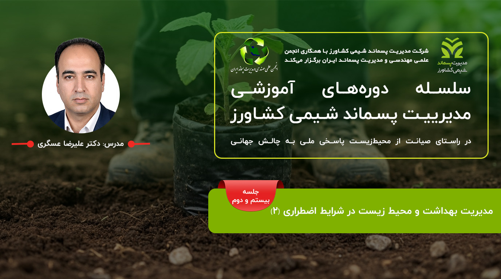

در حال بررسی وضعیت زمان برگزاری...
شرکت مدیریت پسماند شیمی کشاورز با همکاری انجمن علمی مهندسی و مدیریت پسماند ایران، در راستای صیانت از محیط زیست و پاسخی ملی به چالشهای جهانی، جلسه بیست و دوم از سلسله دورههای آموزشی مدیریت پسماند را با موضوع «مدیریت بهداشت و محیط زیست در شرایط اضطراری (۲)» برگزار میکند.
مدرس دوره:
دکتر علیرضا عسگری
مشخصات برگزاری دوره
- تاریخ برگزاری: چهارشنبه ۲ اردیبهشتماه ۱۴۰۵
- زمان برگزاری: ساعت ۱۹:۰۰ الی ۲۱:۰۰
- پلتفرم برگزاری: سامانه اسکای روم (مجازی)
- شرایط حضور: رایگان و برای عموم آزاد است (برای اعضای انجمن گواهی صادر میشود)
📞 تلفن تماس: ۰۲۱۲۲۹۰۰۶۵۷
📱 پیامگیر: ۰۹۸۹۹۸۲۰۰۳۹۵۰